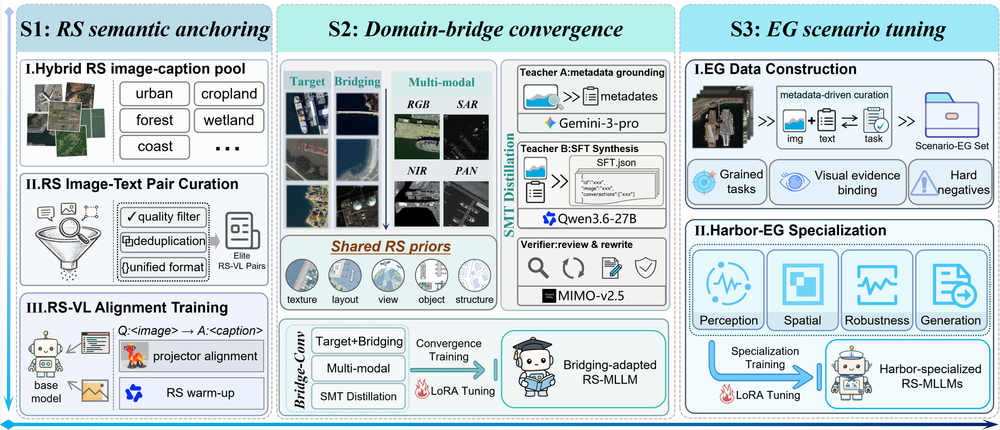

REMOTE SENSING / VISION–LANGUAGE POST-TRAINING
FillingBeforeAdvancing
Capability-Gap-Driven Post-Training for Scenario-Specialized Remote Sensing MLLMs
Specialization starts with the foundations.
General aerial understanding is only the beginning. Reliable harbor reasoning also depends on overhead-view semantics, sensor-aware observations, and transferable domain knowledge.
FBA fills these prerequisite capability gaps in order, before tuning evidence-grounded target behavior. We study this route through multi-source coastal harbor understanding.
盈科而后进Water fills each hollow before flowing onward.
Inspired by Mencius · from breadth to focus
- ≈810K
- CPRS supervision records
- 1,245
- HarborEval diagnostic items
- 4 sensors
- RGB · SAR · PAN · NIR
Three stages. Each with a purpose.
Supervision follows capability dependencies, from broad remote sensing semantics to focused, evidence-grounded behavior.
- S1
RS-Anchor
Anchor the semantics
Establish overhead-view visual–language alignment and broad RGB remote sensing understanding.
569,853 image–caption pairs - S2
Bridge-Conv
Bridge domains and sensors
Learn shared priors across coastal, port, water, dock, and ship scenes in RGB, SAR, PAN, and NIR.
187,296 SFT records - S3
Scenario-EG
Ground the specialization
Tune perception, spatial reasoning, localization, uncertainty, rejection, and grounded reporting.
53,000 SFT records
View the full training diagram

Different sensors. Grounded claims.
A useful answer respects what the sensor can reveal. The public training samples show how supervision changes across modalities.
Illustrative training samples, not model predictions or benchmark answers.
A stronger route to harbor understanding.
Controlled route comparison on HarborEval, across two backbone families. Scores are on a 0–100 scale.
LLaVA-v1.5 vs. Direct-SFT
Qwen3-VL vs. Direct-SFT
| Training route | LLaVA-v1.5 | Qwen3-VL |
|---|---|---|
| Official / base | 46.22 | 70.37 |
| Direct-SFT | 57.95 | 81.09 |
| Strongest Collapsed-SFT | 55.74 | 79.36 |
| Filling Before Advancing | 70.29 | 83.37 |
Gains are overall score points, not relative percentages. Qwen3-VL improves across all eight components; LLaVA-v1.5 gains especially in modality understanding and rejection, while object recognition and grid grounding remain below Direct-SFT.
Explore all results and ablations ↗Continue with the research.
The paper and sample showcases are available. Training and evaluation code, weights, full datasets, and benchmark packages are in preparation; datasets, benchmarks, and trained weights will be publicly released after notification.
Citation
@article{zong2026fba,
title = {Filling Before Advancing: Capability-Gap-Driven Post-Training
for Scenario-Specialized Remote Sensing MLLMs},
author = {Zong, Yuheng and Wang, Minghua and Zhao, Xin and Zhan, Zhi-Hui
and Plaza, Antonio and Benediktsson, Jon Atli},
journal = {arXiv preprint arXiv:2607.22205},
year = {2026}
}